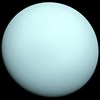
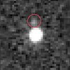
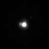
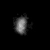
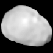
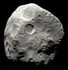
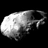
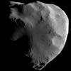
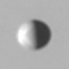
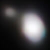

696342±65
1.9885E30
>21
1.408
В составе Солнца всего 1.48% элементов тяжелее Водорода и Гелия
18.12.1610
69911±6
1.898E27
6.6-23.78
1.326
1665-1711
58232±6
5.6834E26
>7.71
0.687
1655-1676

25362±7
8.681E25
13.03.1781
>8.49
1.27
25.01.1986
Название планеты устоялось лишь спустя 70 лет после открытия. Среди предложений было имя Нептун.
24622±19
1.024E26
23.09.1846
8.6
1.638
20.08.1989
6371.0
5.972E24
0
5.5134
Планета с самой большой плотностью в Солнечной системе. Здесь живет 8 миллиардов человек.
26.07.1948
6051.8±1.0
4.8675E24
6.79
5.243
05.02.1974
3389.5±0.2
6.4171E23
>5.7
3.9335
15.07.1965
Известно не менее 240 метеоритов марсианского происхождения
2634.1±0.3
1.4819E23
13.03.1610
14.07
1.936
01.07.1973
2574.7
1.3452E23
25.03.1655
>7.7
1.8798±0.0044
02.09.1979
2439.7±1.0
3.3011E23
13.2
5.427
29.03.1974
2410.3±1.5
1.0759E23
13.03.1610
12.42
1.8344±0.0034
05.03.1979
1821.6±0.5
8.932E22
13.03.1610
>7.7
3.528±0.006
05.03.1979
1737.1
7.342E22
6.3
3.344
07.10.1959
Известно не менее 390 метеоритов с Луны и не менее 35 событий их падения (одно событие – много фрагментов).
1560.8±0.5
4.7998E22
13.03.1610
>7.7
3.013±0.005
02.03.1979
1353.4±0.9
2.14E22
10.10.1846
>7.7
2.061
25.08.1989
1188.3±0.8
1.3E22
18.02.1930
12.7
1.854±0.006
Клайд Томбо открыл Плутон на снимках от 23 и 29 января 1930 г.
14.07.2015
1163±6
1.66±0.02E22
21.10.2003
16.0
2.43±0.05
798±6–816
4.01±0.04E21
28.12.2004
14.2
1.76−1.89
788.4±0.6
3.4E21
11.01.1787
>7.7
1.711±0.005
24.01.1986
763.8±1
2.307E21
23.12.1672
>7.7
1.236±0.005
25.08.1981
761.4±2.6
3.08±0.09E21
11.01.1787
>7.7
1.63±0.05
24.01.1986
734.5±2.8
1.81E21
25.10.1671
>7.7
1.088±0.013
22.08.1981
710−750
4.4E21
31.03.2005
14.3
1.7−2.1

615±25
1.75±0.07E21
17.07.2007
13.5
1.74±0.16
Был крупнейшим телом Солнечной системы без названия до 05.02.2020. В 2019 году находился в 88 а.е. от Солнца и продолжает удаляться со скоростью 1.1 км/с. Имеет спутник Сянлю.
2007 OR10
606.0±0.5
1.59±0.015E21
13.04.1978
>7.7
1.702±0.017
14.07.2015
584.7±2.8
1.28±0.03E21
24.10.1851
>7.7
1.39±0.16
24.01.1986
578.9±0.6
1.25±0.02E21
24.10.1851
>7.7
1.592±0.15
24.01.1986
561.4±0.4
1.095E21
21.03.1684
>7.7
1.478±0.003
13.11.1980
560.5±0.6
1.4±0.2E21
05.06.2002
12.6
1.7
Кьюбивано, кандидат в карликовые планеты. Имеет спутник Вейвот
531.1±0.6
6.175E20
21.03.1684
>7.7
0.984±0.003
25.08.1981
470
9.3835E20
01.01.1801
10.5
2.162±0.008
04.05.2015
467±24
18.06.2002
13.0
Из наблюдений покрытия звезд в 2019–2020 годах получены оценки размера 808 на 748 км
2002 MS4
458±13
6.4±0.2E20
17.02.2004
13.2
1.53±0.1

446.5±11
4.92±0.07E20
22.09.2004
13.9
1.26−1.5
370±7
2.45±0.06E20
21.06.2003
13.4
1.23−1.78
300
4E20
10.09.2005
16.0
1.8−2.4
262.7±0.1
2.59E20
29.03.1807
9.4
3.456±0.035
23.07.2011
256±3
2.11±0.26E20
28.03.1802
14.2
2.92±0.08
Третий по массе астероид Солнечной системы: 7% от массы пояса астероидов.
252.1±0.2
1.08E20
28.08.1789
>7.7
1.609±0.005
26.08.1981
235.8±0.7
0.66±0.08E20
16.02.1948
>7.7
1.20±0.15
24.01.1986
217±7
0.83±0.08E20
12.04.1849
10.5
2.06±0.2
4-й (по объему и массе) астероид Солнечной системы. Имеет близкую к сферической форму и может быть кандидатом в карликовые планеты.
210±7
4.4E19
16.06.1989
>7.7
1.3
25.08.1989
198.2±0.4
3.749E19
17.09.1789
>7.7
1.1479±0.007
12.11.1980

170±25
01.05.1949
>7.7
1.5
24.08.1989
166±3
3.8±1.3E19
02.10.1910
11.4
1.84±0.28
159.5±2
2.4±0.4E19
04.02.1858
10.6
1.41±0.23
145±10
3.8±0.2E19
30.05.1903
11.1
1.92±0.53
138.6±4
5.62±0.05E18
16.09.1848
>7.7
0.544±0.05
25.09.2005

135±1.5
3.1±0.2E19
29.07.1851
9.9
2.96±0.21
127±1
2.7±0.2E19
01.09.1804
9.7
3.15±0.28
06.08.2003
2003Icar..163..135B
111.5±1.5
2.29±0.14E19
17.03.1852
10.0
3.88±0.25
112±4
1.02±0.9E19
25.02.1892
9.0
1.67±0.16
107±2.5
1.37±0.13E19
13.08.1847
8.6
3.2±0.74
106.6±0.8
8.29±0.01E18
16.08.1898
>7.7
1.638±0.033
11.06.2004
97±5.4
4.2E18
24.05.1981
>7.7
1.2
24.08.1989
93
1.27±0.13E19
01.07.1847
9.7
3.18±0.64
8-12.12.2014
2017A&A...604A..64M
89.5±1.4
1.898E18
15.12.1966
>7.7
0.63±0.03
25.08.1981
84−88
8.3E17
01.10.1866
10.2
1.25±0.05
84
30.08.1992
12.3
1992 QB1
Первый транснептуновый объект, открытый после Плутона и Харона. Дал название классическим объектам пояса Койпера – кьюбивано
83.5±2
2.08±0.15E18
09.09.1892
>7.7
0.857±0.099
04.03.1979
81±2
2.9E18
30.12.1985
>7.7
1.3
24.01.1986
78.0 ± 4.7
2.2E18
02.08.1989
>7.7
1.2
24.08.1989
69.8±0.9
4.2±0.6E18
03.12.1904
>7.7
1.63
19.12.2000
64
6.6±0.8E18
18.10.1847
8.6
2.4±1
59.5
2.9E18
08.12.1845
9.2
3.3

58.1±1.8
5.27±0.01E17
18.12.1966
>7.7
0.640±0.062
12.11.1980
49.3±2
4.3E17
05.03.1979
>7.7
04.01.2000
49±1
1.7±0.02E18
15.11.1852
9.0
3.45±0.21
10.07.2010
46.8±4
5.6E17
03.01.1986
>7.7
1.3
03.01.1986

43.1±2.7
1.59±0.02E17
01.10.1980
>7.7
0.48±0.09
25.08.1981
40.7±1.5
1.37±0.02E17
01.10.1980
>7.7
0.49±0.06
05.09.2005
39.9±0.9
8.66±0.6E17
02.01.1905
>7.7
05.03.2007
26.4
1.03±0.04E17
12.11.1885
9.0
1.3
27.06.1997
21.5±2
04.03.1979
>7.7
06.11.1997
19.65
4.8±4.2E16
15.05.2005
>7.7
2.13
14.07.2015
19.017
4.5±4E16
15.05.2005
>7.7
1.37
14.07.2015

17.6±0.4
01.03.1980
>7.7
20.07.2007
15.7
4.2±6E16
29.09.1884
10.3
2.6±0.5
28.08.1993
15.1±0.9
6.60±0.45E15
01.10.1980
>7.7
0.46±0.11
12.06.2007
181000
14.1±1.3
4.95±0.75E15
16.07.1990
>7.7
0.42±0.15
07.03.2017
12.4±0.4
08.04.1980
>7.7
11.10.2005
11.267
1.0659E16
18.08.1877
>7.7
1.876
29.11.1971
10.7±0.7
13.03.1980
>7.7
23.09.2005
8.42±0.02
6.69±E15
13.08.1898
6.112
2.67±0.03
29.02.2000
8.2±2
2E15
08.07.1979
>7.7
19.12.1996
658100
6.33
1.65E16
28.06.2011
12.7
14.07.2015
6.2±0.18
1.476E15
12.08.1877
>7.7
1.471±0.166
20.12.1971
6.266
2.5E16
30.07.1916
8.402
2.7
Первый посещенный космическим аппаратом (
Галилео) астероид. Был посещен 29.10.1991, фото сделаны с расстояния 5300 км на скорости 8 км/с.
29.10.1991
5.75
2.2E14
25.12.1758
>29.8
0.6
04.03.1986
АМС Вега-1 передала первые изображения ядра кометы 4 марта 1986 года. Космический аппарат Джотто сблизился с кометой 14 марта на расстояние 596 км
5.5
7.5E15
26.06.2012
12.7
13.07.2015
3.8±0.8
7.79E13
01.05.2005
>7.7
0.34±0.26
16.01.2017
3±0.1
03.04.1867
>11.1
0.62
04.07.2005
3
13.05.1999
7.86
26.08.1999
2.9
1.4E14
11.10.1983
15.35
17.12.2017
2.66
2E13
28.12.1904
>13
0.3
22.09.2001
2.58±0.084
04.11.1969
9.35
05.09.2008
2.4
23.03.1942
8.96
Фото астероида было получено КА Stardust 02.11.2002 с расстояния 3 км.
02.11.2002

2.22±0.07
2E13
06.01.1978
>7.7
0.25±0.09
16.10.2010
2.133
2.3E13
06.01.1978
>10.8
0.6
02.01.2004
КА Stardust сблизился с ядром кометы 02.01.2004 с относительной скоростью 6.1 км/с. Фото сделано с расстояния 237 км.
2.1
7.9E13
02.03.1981
8.171
1.4
1.516
5.05E13
04.01.1989
6.59
2.5
13.12.2012
1.5
6.1E12
15.11.2006
9.9
22.08.2016
1.45±0.03
01.06.2004
>7.7
0.31±0.05
20.05.2012
1.25
09.05.2002
8.77
13.06.2006
1.3±0.4
3E13
24.10.2004
>7.7
0.5–2
22.05.2006
1.25
9.17E12
20.09.2001
6.1
1.1±0.2
0.94
2.6E13
14.09.1951
6.75
0.9
1.5E12
30.05.2007
>7.7
0.5
30.01.2016
0.82
7.8E12
27.05.1992
10.93
3.9
29.07.1999
0.7
17.02.1994
10.3
Спутник астероида Ида, обнаружен 17.02.1994 на снимках АМС Галилео от 28 августа 1993 г. Стал первым прямым доказательством существования лун у астероидов.
28.08.1993
0.69±0.2
17.05.2010
10.58
0.68±0.04
09.08.2007
6.812
31.10.2012

0.66±0.02
2.49±0.05E12
20.05.1999
21.374
1.97±0.24
25.05.2019
0.57±0.08
3E11
15.03.1986
>13
03.11.2010
0.55
4E12
23.02.1950
6.994
3.5
Имеет вероятность столкновения с Землей в 2880 году.
04.03.2001
0.5
21.12.2017
7.562
0.6−1.2
0.432
4.5E11
10.05.1999
4.663
1.19±0.03
Миссия Hayabusa2 прибыла к астероиду 27.06.2018.
10.07.2018
0.395
04.11.1999
01.11.2023
8.6
Цель миссии Lucy
0.39
5.4E11
11.04.1996
5.162
2.4±0.3
Цель миссии DART.
26.09.2022
0.33±0.06
6E12
03.03.2009
>7.7
0.54±0.15
27.01.2010
15238.2
0.245
7.329E10
11.09.1999
5.096
1.190±0.013
Имеет высокую вероятность столкновения с Землей в 2175–2199 гг. 03.12.2018 к астероиду приблизился КА OSIRIS-REx.
02.12.2018
0.22±0.04
25.10.2011
5.189
0.205
7.8E10
25.11.1998
10.865
0.17
6.1E10
19.06.2004
5.688
2.6−3.2
Больше не потенциально опасный астероид. До 2013 г. вероятность столкновения была сильно переоценена.
0.085
4.3E9
20.11.2003
5.162
0.6−2.4
26.09.2022
0.078
26.01.2017
6.542
07.02.2017
0.07
4E9
08.01.2011
5.534
04.02.2023
Этот список тел Солнечной системы содержит:
- Все известные тела в гидростатическом равновесии, то есть, имеющие близкую к сферической форму (39 штук)
- Все известные
тела c радиусом от 400 км и более (36 штук)
- Все известные
тела с картой поверхности
(45 тел: Меркурий, Венера, Луна, Марс, Фобос и Деймос, 12 астероидов, 6 спутников Юпитера,
11 спутников Сатурна и 6 спутников Урана, 2 спутника Нептуна, Плутон и Харон).
- Все тела, посещенные космическими аппаратами,
за исключением комет
21P/Джакобини – Циннера,
26P/Григга – Скьеллерупа,
C/2006 P1 (Макнота).
- Некоторые спутники планет
(таблицы
физических
свойств), в том числе изображения которых были получены с борта КА.
- Некоторые тела с изображением, полученным методом радиолокации,
в том числе с трехмерной моделью
(см. Радиолокационная астрономия,
Пресс-релизы изображений,
Planetary Radar Science Group).
- Некоторые тела c изображением, полученным при помощи адаптивной оптики,
метода покрытия звезд
и других способов восстановления формы тел.
- Некоторые примечательные астероиды,
включая сближавшиеся с Землей.
А также: Статистика тел Солнечной системы (файл создается автоматически)
Замечания:
- Спутник Юпитера Ганимед и спутник Сатурна Титан больше по размерам,
чем Меркурий. Все же, ближайшая к Солнцу планета, обладая железным ядром, массивнее их вместе взятых.
- Ядро кометы Галлея было снято космическим аппаратом Джотто
и КА Вега 2 в марте 1986 г. Размеры - 15×8 км, масса - 2.2×1017 г (220 млрд тонн).
- Первым астероидом, которого посетил спутник, стал астероид 951 Гаспра.
29 октября 1991 года к ней подлетел КА Галилей.
- У астероида Ида есть спутник Дактиль.
Эта система была второй, посещенной космическим аппаратом, тем же Galileo. Сближение на 2390 км произошло в августе 1993-го.
Дактиля нашли позже, в феврале 1994, по анализу снимков, сделанных во время сближения.
- Астероид 5535 Аннафранк был сфотографирован в 2002 году в ходе миссии
Stardust с расстояния 3079 км.
- Астероид 9969 Брайль сфотографирован
КА Deep Space 1 с расстояния 14000 км, хотя 29 июля 1999 года они сближались на расстояние всего лишь 26 км.
Размеры этого астероида - 2.1×1×1 км, масса - 7.8 × 1015 г (7.8 млрд тонн).
Качество изображения – не лучшее:
- Астероид (25143) Итокава был посещен японским КА "Хаябуса" в сентябре-ноябре 2005 года.
После относительно успешного сбора проб вещества астероида на Землю была отправлена капсула с образцом. Она приземлилась в Австралии 13 июня 2010 года.
Размеры астероида весьма скромные: 535×294×209 метров. Масса - 3.5×1013 г (35 млн тонн).
- 13 декабря 2012 года китайским КА Чанъэ-2 был осуществлен пролет возле астероида
(4179) Таутатис. У него уже был "портрет", полученный с помощью
обсерватории Голдстоун и построена трехмерная модель.
Размеры Таутатиса - 4.5×2.4×1.9 км, масса - 5×1016 г (50 млрд тонн).
- Аппарат Европейского космического агенства
Розетта,
встретившись с Лютецией и Штейнсом, долетел до кометы
Чурюмова-Герасименко в августе 2014 года.
- Примерно 6% околоземных астероидов, как предполагается, яввляются
выродившимися кометами.
На снимке ниже изображен коллаж из четырех снимков Нептуна, полученных КА Вояджер-2 24 августа 1989 года с паузами в 9 минут.
Яркие точки – спутник Деспина
в движении, отбрасывающий тень на поверхность Нептуна. Яркость Деспины для наглядности искусственно увеличена.
Посмотрите на оригинальные изображения!
(Астрокартинка дня от 16.01.2014).
Для справки: размеры Деспины - 180×148×128 км, а масса - 2.2×1018 кг (2200 трлн тонн).

Сравнение масштабов
астероидов и комет:

На этой картинке в масштабе изображены 18 из 20 астероидов, сфотографированные до декабря 2018 года.
Тела Солнечной системы: материалы и подборки ссылок
Ссылки:
- Discovery and exploration of the Solar System;
Solar System#Visual summary
- Extraterrestrial liquid water
- Solar System Missions:
карта текущих и предстоящих миссий в Солнечной системе,
Olaf Frohn twitter.
- List of Solar System probes
- AstDyS-2,
NEODyS-2
- Низкая околоземная орбита: характеристики, delta v.
База данных Asterank,
База данных Space Reference.
- ESA Space Debris Office.
NASA Orbital Debris Program Office.
- Sentry: Impact Risk Data table.
Accessible NEAs.
PL SSD/CNEOS API,
example request.
- VLT/SPHERE imaging survey of the largest main-belt asteroids: Final results and synthesis
- Is delay-doppler radar imaging of NEO asteroids possible only if it spins fast enough?,
Why do radar maps of the surface of Venus have missing slices?
- Asteroid Radar Astronomy (2002),
pdf.
Delay-Doppler Radar Imaging: How radio telescopes get "images" of asteroids
- Asteroid Radar Research,
Radar observations of Earth-approaching asteroids (1997, pdf)
- Ты узнаешь его из тысячи. Радиоастрономы рассмотрели уже 1001 астероид, сближавшийся с Землей. Вот самые интересные
- Анонс первой версии инфографики
Списки и статистика
- страница М. Брауна о карликовых планетах,
список возможных карликовых планет,
критерий "Clearing the neighbourhood".
- Астероиды, имеющие спутники,
контактные двойные (Johnston's Archive).
- Список имен малых планет,
Бюллетени рабочей группы по номенклатуре малых тел,
Список малых планет с именами.
- Список групп малых планет
- Список тел Солнечной системы с наибольшими афелиями,
Distribution
of trans-Neptunian objects, with semi-major axis on the horizontal, and inclination on the vertical axis.
- List of minor planets.
(4596) 1981 QB and 616689 Yihangyiyang are currently the lowest-numbered unnamed and highest-numbered named minor planets, respectively.
- List of unnumbered minor planets
- List of unnumbered trans-Neptunian objects
- Lost minor planet
- Архивная статистика
на сайте
Центра малых планет